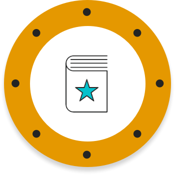
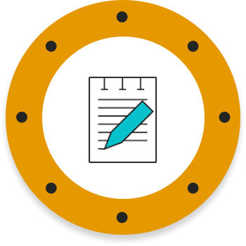
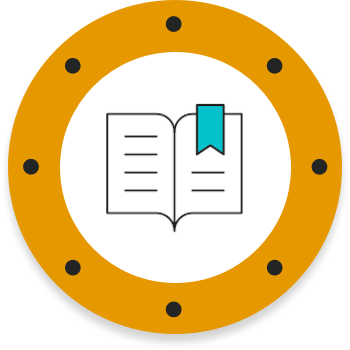

Our impact on young pirates

Reading age improved 50% faster than age related expectations

100% of parents have seen a positive impact on literacy abilities

Reading increased from once weekly to multiple times or every day!